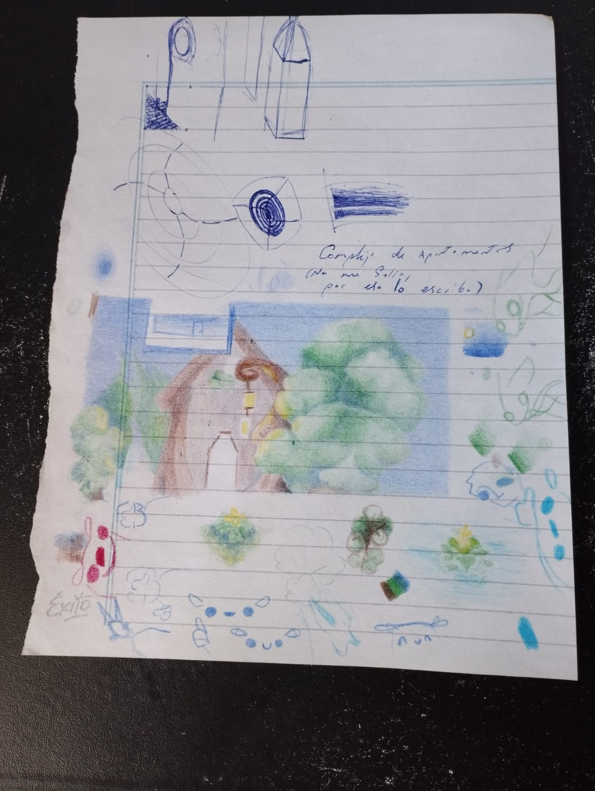

.

.

.

.

.8/5/2026
(lo termine unos días antes,
lo exporte hoy)

.27/4/2026

.sassy

.18/4/2026

.

.i draw almost every day if not every day, so i got lots of pages like this or even more fill with sketches and me just tring stuff out,
i really like that :)

.i am really loving supernatural,
so i tried to draw dean,
sadly i am to inform,
that i coundn´t capture his beauty.
:(

.

.

.13/4/2026

.


.i had a dream with a house similar to this, my dreams are weird, this that i created inspired by that, feels lonely to me.
i would like to visit my dreams more and actually finishing this.
i wonder if i coud expres that feeling that they gave me and that other feeling that i have once i wake up.

.1/4/2026

.1/4/2026

. esto fue terminado el 19/3/2026

. esto fue terminado el 19/3/2026